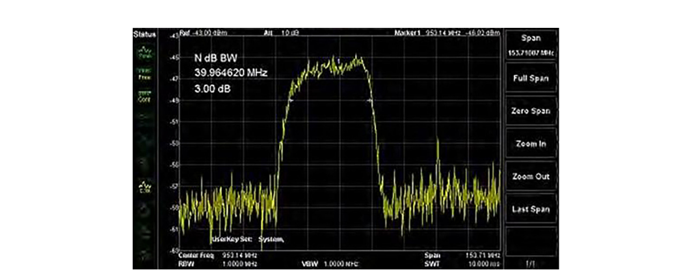
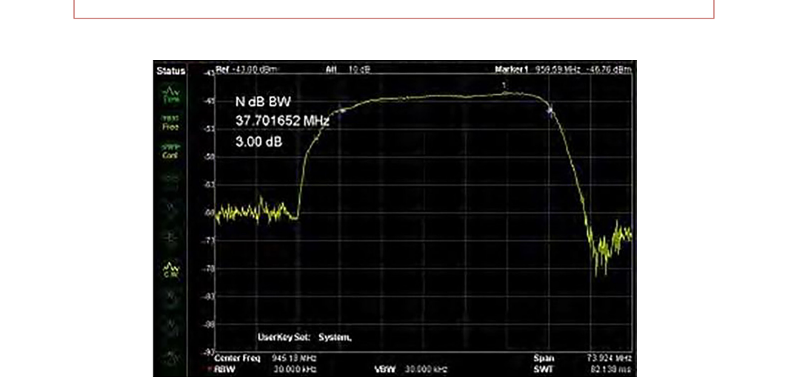
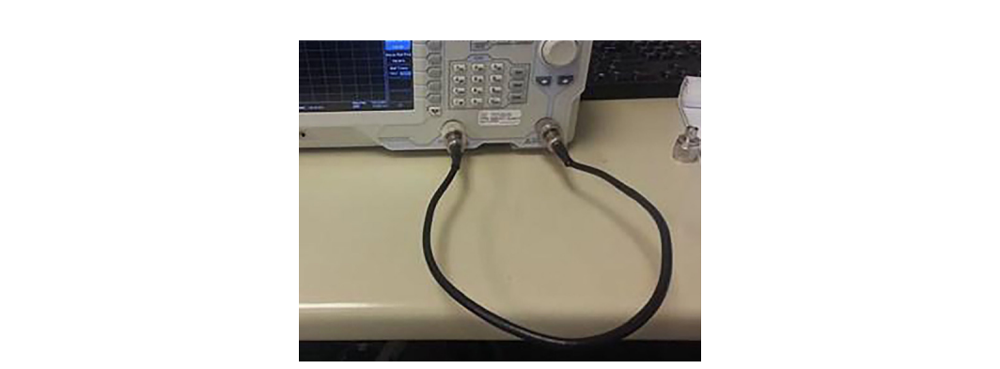
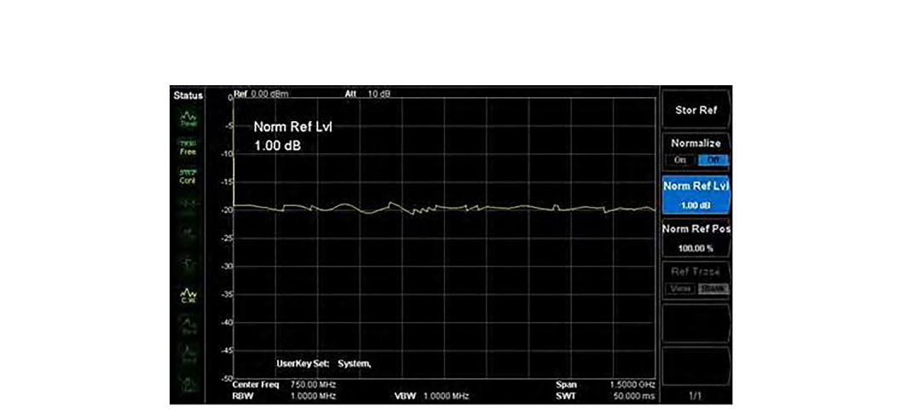
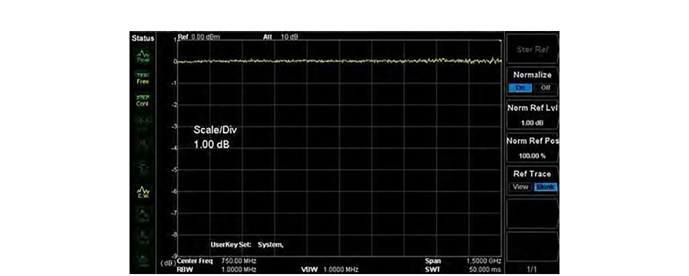
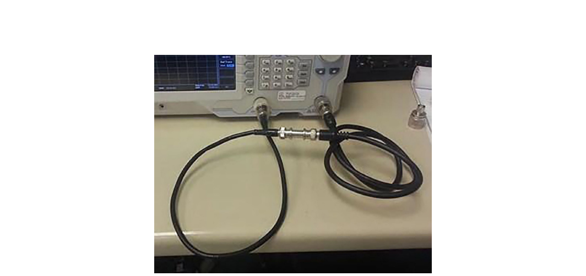
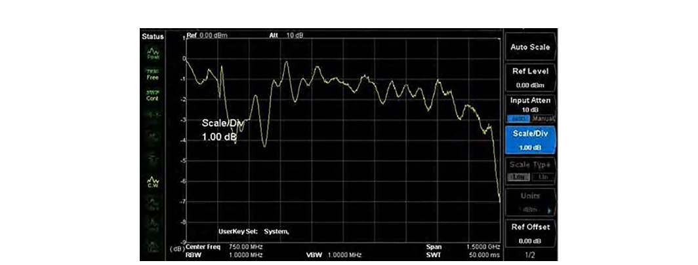

The previous chapters covered the instruments that read RF and the math behind what they show you. This chapter puts those instruments to work on a class of measurements you will perform constantly at the bench: scalar measurements of how a component changes a signal as it passes through. The question is simple to state. You put a known signal in, you measure what comes out, and you record the difference across frequency. The answer tells you whether a filter does its job, whether a cable has gone bad, and how much loss a connector adds to your path.
The key tool here is the tracking generator, a feature built into many spectrum analyzers that turns a passive receiver into a stimulus-and-response test set. With a tracking generator you can sweep a filter and watch its shape appear on screen. You can measure the insertion loss of a cable across a wide band. You can catch a worn connector before it corrupts a more important measurement somewhere downstream. None of this requires a vector network analyzer, and for scalar work the spectrum analyzer plus tracking generator is often faster to set up and easier to read.
This chapter walks through using a tracking generator, testing filters, and measuring cable and connector loss, then closes with how insertion loss and return loss show up in real bench work.
Now that we have a working understanding of the instruments used to measure RF, let us put one of them to work characterizing common components. Most component-level tests share a requirement: you need an RF source that delivers a signal of known amplitude and frequency to the device under test (DUT). When you test a filter, for example, you want to present a series of known amplitudes at specific frequencies so you can see where the filter passes signal and where it rejects it.
You could solve this with a separate signal generator and synchronize its output to the sweep of the spectrum analyzer. That works, but it is fussy. The two instruments have to agree on frequency at every step, and any drift between them shows up as error in your trace. Many spectrum analyzers offer a simpler path: a built-in tracking generator that handles the synchronization for you.
What the tracking generator does. A tracking generator is an extension of the analyzer's own sweep circuit. It is a programmable RF source whose output frequency is locked to the sweep steps of the spectrum analyzer. Because the source and the receiver step through frequency together, the signal leaving the generator is always at the exact frequency the analyzer is tuned to receive. If you set the analyzer to sweep from 1 MHz to 100 MHz, the tracking generator outputs a continuous sine wave that sweeps from 1 MHz to 100 MHz in full synchronization with the measurement.
That lockstep is the whole trick. Send the tracking generator output through a DUT and back into the analyzer's RF input, and the trace on screen becomes the frequency response of whatever sits between the two ports. A flat trace means the DUT passes every frequency equally. A dip means the DUT attenuates that frequency. A peak means it favors it. You are no longer looking at the spectrum of an unknown signal. You are looking at the transfer function of a known one.
A few practical notes set you up for clean results. Match the generator output amplitude to the dynamic range of your measurement: high enough to sit well above the noise floor, low enough that you do not compress the analyzer's front end or overdrive the DUT. Keep the cabling short and consistent, because every cable and adapter in the path adds loss that you will either subtract out by normalization or carry as error. And remember that a tracking generator gives you scalar results only. It measures magnitude versus frequency. It does not measure phase, so it cannot give you the full complex picture a vector network analyzer would. For the great majority of filter and cable work, magnitude is exactly what you need.
Filters are among the most common components in any RF design. Their job is to remove unwanted frequencies and pass wanted ones, and the four basic types (low-pass, high-pass, band-pass, and band-stop) each shape the spectrum in a different way. For a refresher on filter types and what they do, see the discussion in Chapter 2. Whatever the type, testing a filter answers two questions: how well does it reject the frequencies it is supposed to block, and how cleanly does it pass the frequencies it is supposed to keep.
A spectrum analyzer with a tracking generator gives you both answers in a single sweep. Here is a typical procedure.
Required hardware: filter under test; spectrum analyzer with tracking generator; cabling and adapters to connect to the filter.
Step 1: Normalize the trace (optional but recommended). Many elements in an RF signal path have nonlinear or frequency-dependent behavior of their own. Cables roll off at high frequency. Adapters add a fraction of a dB. Connections vary slightly each time you make them. Normalization removes these contributions mathematically so the trace reflects the filter and not the fixture around it. Normalization is the process of subtracting the response of your cabling, adapters, and connections from the measurement, leaving the response of the DUT alone.
Going Deeper - Clean connectors, repeatable results
Clean the mating surfaces of the adapters and the input connector with a lint-free cloth before you connect them. Clean connectors protect the threads from damage and make every measurement repeatable. A speck of grit or a smear of oil on a mating surface changes contact resistance and can add a fraction of a dB that drifts from sweep to sweep, which is exactly the kind of small, wandering error that normalization cannot fix.
Step 2: Measure the filter. Connect the tracking generator output to the filter input using the appropriate cabling and connectors, then connect the filter output to the analyzer's RF input. Configure the start and stop frequencies for the span of interest, setting the span wide enough to see the passband and a useful stretch of the stopband on either side. Set the tracking generator amplitude to a level that sits comfortably above the noise floor. If your instrument has a preamplifier, you can enable it to lower the displayed noise floor and reveal more of the filter's rejection depth. Enable the tracking generator output, and the filter's response appears on the trace. In a band-pass filter you will see a raised region (the passband) with the response falling away on both sides.
Step 3: Scale and read the trace. The first view is rarely the best view. Adjust the amplitude reference level and the start and stop frequencies to zoom in on the region you care about. Many analyzers include an auto-scale feature that configures the reference level and span automatically to fit the active part of the trace into the display. It is a fast way to get from a raw sweep to a readable one.

With the trace scaled, markers turn the picture into numbers. Markers are cursors you place on the trace to read the exact frequency and amplitude at a point. Most analyzers also offer marker functions that measure bandwidth at a chosen level below the peak, which is how you read a filter's 3 dB bandwidth directly.
The 3 dB bandwidth is the standard figure of merit for a band-pass filter. It is the width of the passband measured between the two points where the response has fallen 3 dB below its peak, the points where the filter passes half of its peak power. A narrow 3 dB bandwidth means a selective filter. A wide one means a filter that passes a broad range. Place one marker at the peak, set the bandwidth function to 3 dB, and the analyzer reports the width and the two edge frequencies for you.

The same setup measures more than just bandwidth. The depth of the stopband tells you the filter's rejection. The flatness of the passband tells you its ripple. The steepness of the skirts tells you how sharply it transitions from pass to reject. All of it reads off a single normalized sweep.
Cables and connectors are the quiet error sources in every RF bench. They sit between your instrument and your DUT, and they have a real effect on the accuracy and validity of every measurement that passes through them. Worse, they age. Cables flex and crack, center conductors work loose, and connector surfaces oxidize and wear. That wear shows up as rising attenuation, often concentrated in particular frequency ranges, and it can corrupt a measurement long before the cable looks visibly bad. Measuring cable and connector loss directly, on a schedule, is how you keep a bad cable from quietly poisoning your results.
The same tracking-generator technique used for filters measures cable loss across frequency. The setup adds a reference assembly so you can normalize out the adapters and read the cable on its own.
Required hardware: cable under test; two N-type to BNC adapters (Figure 8.5); a short reference cable with terminations that match your adapters and the cable under test; an adapter to join the reference cable to the cable under test, a BNC barrel connector in this procedure (Figure 8.6); and a spectrum analyzer with a tracking generator (TG).
Select adapters that convert from N-type, the input and output connector found on most spectrum analyzers, to the connector type of the cable you are testing. Connector quality matters more than it looks. Higher-grade connectors with silver plating and beryllium-copper pins last longer and give more repeatable contact, which directly improves the consistency of your measurements over many connect-and-disconnect cycles. As an alternative to a single cable-to-cable adapter, you can build a short reference assembly from two adapters and a short cable, normalize the display against that assembly first, then measure the cable under test against the normalized baseline.
Test steps. Attach the adapters to the tracking generator output and the RF input, cleaning the mating surfaces with a lint-free cloth first to prevent damage and ensure repeatability. Then connect the reference cable between the TG output and the RF input on the analyzer.

Adjust the span of the scan to the frequency range of interest. Adjust the tracking generator output amplitude and the analyzer's display so the entire trace is visible on screen. Enable the tracking generator output. The trace shows the loss of the reference path, adapters and all, across frequency.

Normalize the reference insertion loss. The analyzer stores this trace automatically and subtracts it from every subsequent measurement, which flattens the reference path to a near-zero line and leaves only what you add to the path afterward.

Disconnect the reference cable from the RF input. Insert the cable-to-cable adapter (the BNC barrel, or whatever joins your two cable types) and connect the cable under test in place of the reference cable. Connect the cable under test to the RF input and enable the tracking generator.

The screen now shows the loss of the cable under test plus the small added error of the cable-to-cable adapter. Because you normalized out the reference path, the bulk of what you see belongs to the cable itself. Zoom in to read the loss at the frequencies that matter for your application.

Read the trace with an eye for two things. First, the overall slope. Coaxial cable loss rises with frequency because conductor and dielectric losses both grow with frequency, so a healthy cable shows a smooth upward slope across the band. Second, local features. A sudden jump, a ripple, or a notch that should not be there usually points to a damaged connector, a loose center pin, or a kink in the cable. A cable that has aged out of spec often shows extra loss bunched in a particular band rather than a uniform rise. When a measured loss exceeds the cable manufacturer's published figure for that length and frequency, the cable has degraded and should be replaced before it skews more important work.
BNC in Practice - Keep a known-good reference set
The cleanest cable and connector measurements come from technicians who treat their reference cable and adapters as calibration-grade hardware, not as spare parts. Berkeley Nucleonics spectrum analyzers with tracking generators are built for exactly this scalar stimulus-response work, and pairing them with a labeled, protected reference set means your normalization baseline stays trustworthy from one session to the next. Verify tracking generator availability and frequency range against the current datasheet for your model.
Two terms come up constantly in scalar component work, and it is worth being precise about what each one measures.
Insertion loss is the reduction in signal power caused by inserting a component into a transmission path. It is what everything in this chapter has measured so far. You compare the power that arrives at the analyzer with the component in the path against the power with the path normalized to zero, and the difference, in dB, is the insertion loss at that frequency. For a cable or a connector, lower insertion loss is better, since you want the signal to pass with as little reduction as possible. For a filter, insertion loss has two faces: you want low insertion loss in the passband and high insertion loss (deep rejection) in the stopband.
Return loss describes the same interface from the other direction. It measures how much of the incident power is reflected back toward the source because of an impedance mismatch at the component. A perfect 50-ohm match reflects nothing and has infinite return loss. A poor match reflects a large fraction of the signal and has low return loss. Return loss is closely related to VSWR, the voltage standing wave ratio, and the two are different ways of expressing the same mismatch. High return loss is good, because it means little energy bounces back. As a rough field reference, a return loss of 20 dB corresponds to a VSWR of about 1.22 to 1, which is a respectable match for most general-purpose work. [1]
The practical distinction is this. Insertion loss tells you how much signal gets through. Return loss tells you how much gets reflected. A cable can have low insertion loss and still have a connector with poor return loss, and that reflected energy can cause ripple and measurement error elsewhere in the system. A tracking generator measures insertion loss directly, since it reads the transmitted signal. Measuring return loss well usually calls for a directional element such as a directional coupler or a return loss bridge, or a vector network analyzer, because you need to separate the reflected wave from the incident one. Many spectrum analyzer kits include a reflection bridge accessory for exactly this purpose.
On the bench, the two measurements work together. Normalize your path, measure insertion loss across the band to confirm the component passes signal as it should, then check return loss at the connectors and interfaces to confirm the component is not throwing energy back into the system. A component that passes both is one you can trust in a larger measurement chain.
Take it interactively. The quiz lives on its own page with hidden answers - write your attempt first (even four characters works), then reveal. Self-graded. About 10 minutes.
Or read the questions and answers inline below (preserved for print and offline use).
[1] Standard return loss to VSWR relationship: 20 dB return loss corresponds to a VSWR of approximately 1.22:1. Verify the exact conversion table before publication.